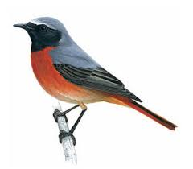
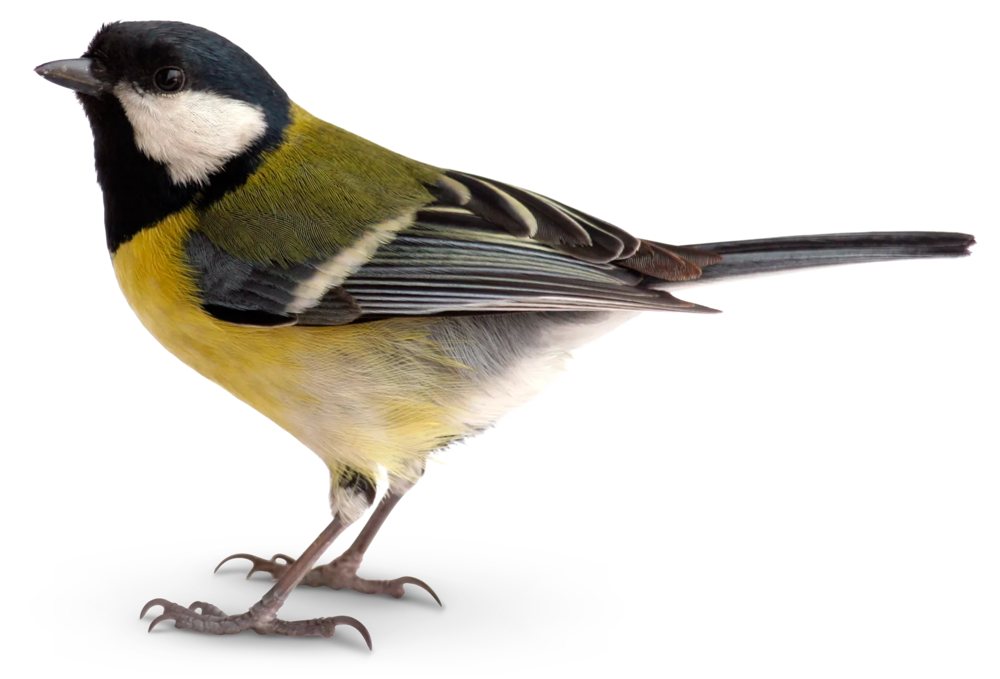

Settings
Home
Royal Society for the Protection of Birds
About
Where to do the bird watch?
Count the birds you see in your garden, from your balcony or in your local park for one hour over the Big Garden Birdwatch weekend.
How do I take part?
It’s easy – you simply watch the birds in your garden or local park for one hour, and record what you see.

What birds should I count?
Only include birds that land, not those flying over. Count the highest number of each species you see at any one time.

What if I didn't see any birds?
Even if you didn’t see anything at all in your hour, please let us know. It’s all really useful information.